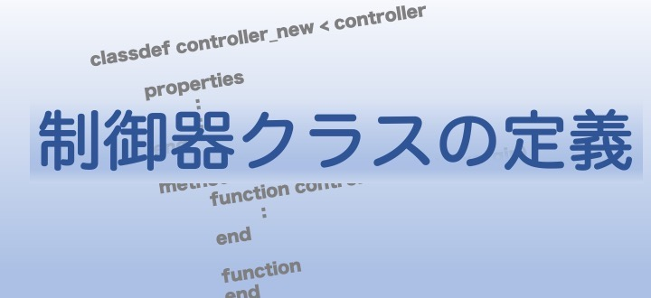

¶
GUILDA上に新しい制御器モデルを実装するには、controllerクラスを継承した新たな子クラスをmファイルとして作成します。本ページでは、このクラスファイルの定義方法を解説していきます。
実装すべきこと¶
- controllerクラスの継承
controllerクラスには解析を実行する際に制御器モデルのクラスとして備えておくべき関数が定義されています。このcontrollerクラスを継承することで、新たに作成する制御器モデルにもそれらの関数が自動的に備わります。 - 制御対象を示すプロパティ名の指定
controllerクラスを継承することでidx_inputとidx_observeというプロパティも継承されます。新たな制御器クラスを作成する場合はコンストラクタメソッドで、これら２つのメンバ変数に対し以下に対応したインデックスを代入する処理を入れる必要があります。idx_input：コントローラの出力信号，システムへの入力信号が印加されるバスの番号（抽象変数）idx_observe：コントローラが観測できるバスの番号（抽象変数）
- controllerクラスの抽象メソッド2つを実装
controllerクラスを引き継ぐことで制御器モデルのクラスとして備えておくべき機能を引き継ぐことが出来ると示しましたが、制御アルゴリズムを決定する関数などは新たなモデルを実装する度に定義する必要があります。そのような継承するだけでは不足している関数を、controllerクラスでは抽象メソッドとして定義しています。- 具体的には
get_dx_u,get_nx（下で詳細を説明）
- 具体的には
コードの作成方法¶
まず初めに、作成すべきコードの全体像を示します。以下のコードではmyControllerという名前の制御器モデルを実装しています。コードを見ると1行目でmyController < controllerとなっていることが分かると思います。このように表記することで、このクラスはcontrollerクラスを継承するということが宣言されます。
また、新たに定義した制御器モデルの説明とコンストラクタの実行方法を冒頭にコメントアウトで記しておくことをお薦めします。ここにメモしておくことで、ソースコードの解説ページで紹介していますが、各制御器のモデルをリストとして見ることができるようになります。
propertiesには制御器モデルの実装にあたり必要なメンバ変数を適宜定義して下さい。methodsに定義する関数の要件に関しては、必ず実装しなくてはならない「抽象メソッド」と、「一部の解析を行う際に実装しておく必要がある関数」に分け以下で順に解説を行います。
myController.m
classdef myController < controller
%実装するモデルの説明
%状態変数と入力端の説明
%このクラスのコンストラクタの実行方法・引数の設定方法
properties
%必要なメンバ変数をここに定義します
end
methods
%コンストラクターメソッド
function obj = myController(arg1,arg2,...)
%コードを書く
end
%必ず定義する必要のある関数(抽象メソッド)
function [dx, u] = get_dx_u(obj, x, X, V, I, U_global)
%コードを書く
end
function nx = get_nx(obj)
%コードを書く
end
%近似線形化に関する解析を行いたい場合に実装すべき関数
function [A, BX, BV, BI, Bu, C, DX, DV, DI, Du] = get_linear_matrix(obj)
%コードを書く
end
function [dx, u] = get_dx_u_linear(obj, t, x, X, V, U_global)
%コードを書く
end
end
end
:fontawesome-solid-arrow-circle-right: 抽象メソッド¶
-
[dx, u] = get_dx_u(obj, x, X, V, I, U_global)
コントローラの状態の微分と出力信号（システムへの入力信号）を取得するためのメソッド- 入力引数
x：コントローラのの状態（ベクトル）X：各バスに接続された機器の状態（セル配列）V：各バスの電圧（2*bus数 の行列）I：各バスの電流（2*bus数 の行列）U_global：
グローバルコントローラによって各バスに印加される入力信号（セル配列）
add_controller_grobalで追加されるコントローラ（グローバルコントローラ）では空配列． 制御器モデルが観測できるのは上記のみとなります。そのため、その他に必要な物理量がある場合でも、引数の値から自前で計算する必要が出てきます。
- 出力引数
dx：コントローラの状態の微分（ベクトル）u：コントローラの出力信号，システムへの入力信号（ベクトル）
- 注意点
- controllerクラスはグローバルコントローラ・レトロフィットコントローラ・その他コントローラに対して共通で継承されています。controllerクラスを継承するだけでは分散制御系であることを前提にしていないため，分散制御器を作成する場合は，参照して良い信号と参照してはならない信号を派生クラスにて陽に書く必要があります。
- 他のコントローラの状態を参照することはできない。コントローラ同士の通信が必要な場合は，それらを一つのコントローラとして実装する必要があります。
- 入力引数
-
nx = get_nx(obj)
コントローラの状態変数の次元を取得するためのメソッド- 出力引数
nx：コントローラの状態変数の次元
- 出力引数
:fontawesome-solid-arrow-circle-right: 実装した方が望ましいメソッド¶
以下の関数は定義しなくても制御器モデルを実装することはできますが、このままですと一部の機能が使えません。
近似線形化を用いる解析を行うために必要なメソッド¶
-
[A, BX, BV, BI, Bu, C, DX, DV, DI, Du] = get_linear_matrix(obj)
線形化したコントローラを取得するためのメソッドで を満たす行列を返す。なお、式中のx,X,V,I,U_globalは上のget_dx_uの引数と同様の変数を指す。*がつく値は、その平衡点である。 -
[dx, u] = get_dx_u_linear(obj, t, x, X, V, U_global)
線形化したコントローラの状態変数の微分と入力を取得するための関数．
各変数については上のget_dx_uを参照のこと．